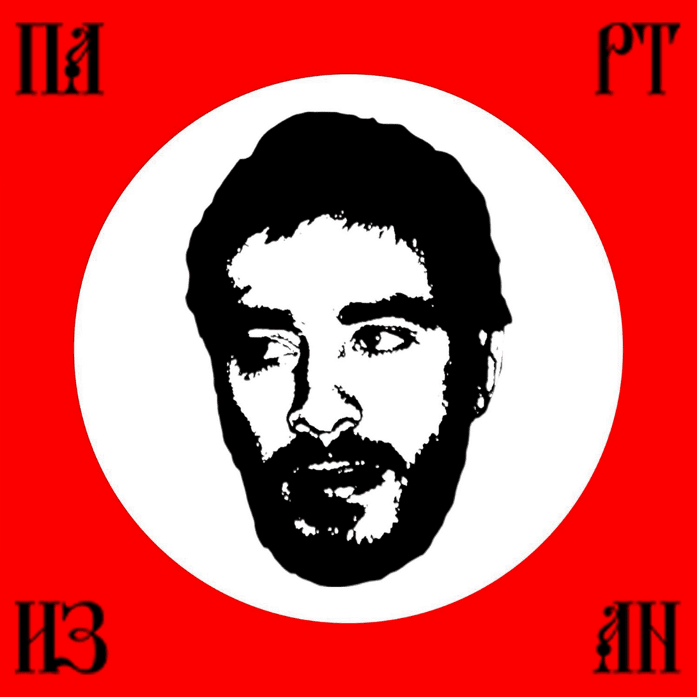

Сайт содержит каталог музыкальных исполнителей новой и новейшей школы. Каталог включает данные о творчестве, дискографии и статистике прослушиваний артистов.
Данные представлены в табличном виде и пригодны для построения графиков, сортировки и фильтрации.
Каталог систематизирован по трём параметрам: год начала карьеры, количество студийных альбомов, число прослушиваний в десятках тысяч. Источником данных выступает статистика Spotify.

Хаски